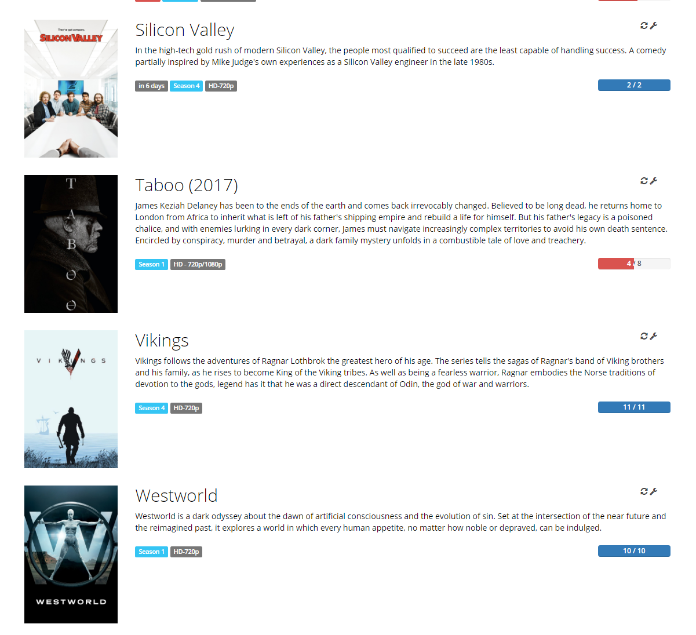
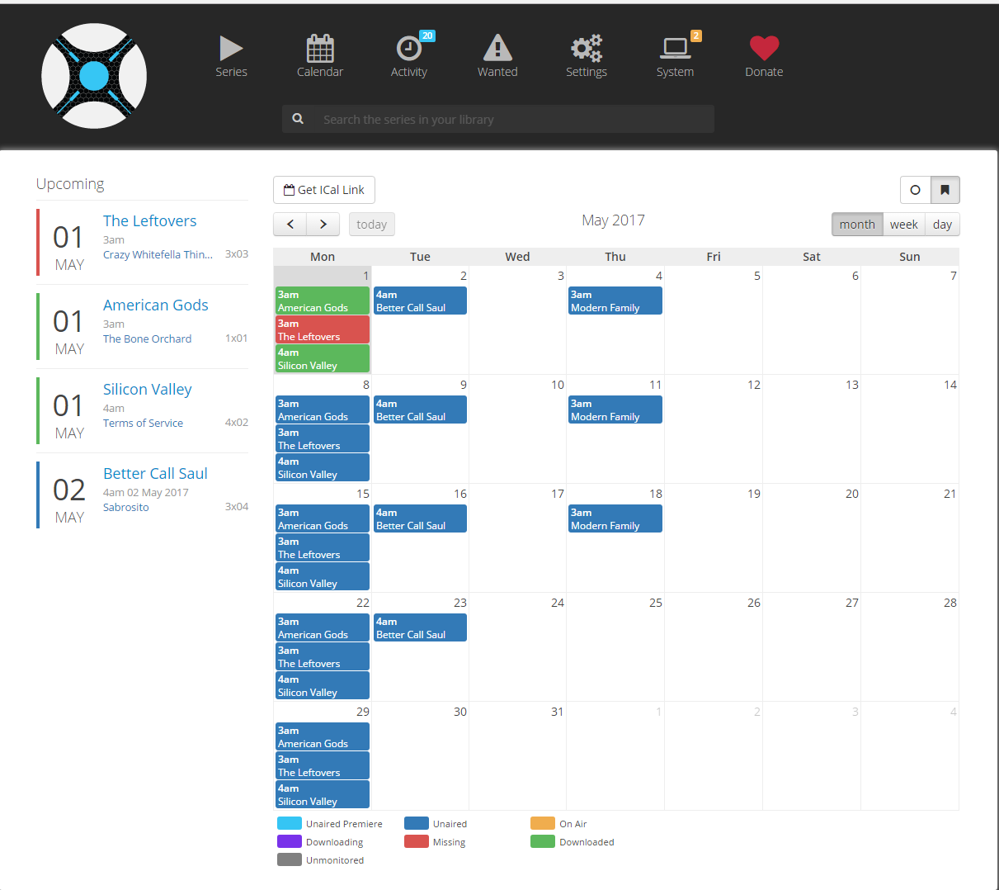
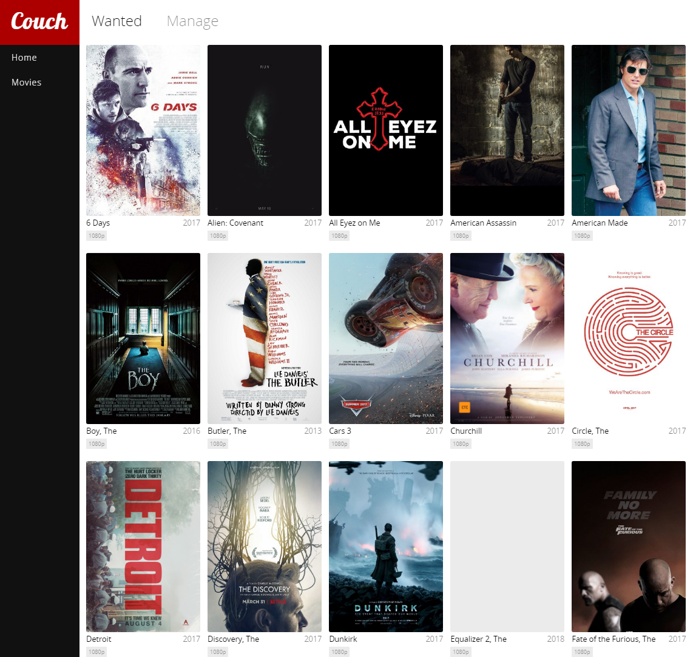

Raspberry Pi 3 a.k.a the 24/7 auto downloader II
Following the guide to have a Raspberry hadling all the media downloads at home, let’s continue:
BitTorrent client
There are several options available for downloading torrents. The one I chose is Deluge because of being free, light-weight and ad-free. It also has a “client-server” mode very useful for head-less raspberry and some plugins available that make it very flexible.
The installation is pretty straightforward and after it you will be able to control it from a client you can install on windows/mac/linux. Also a webUI is available. In case your are intesred, here you have some useful data for a more advanced installation. Remember to configure it to download the torrents to the disk we mounted in the previous post, unless you want to run out of space in the pi very fast.
TV shows - Sonarr

Sonarr will handle all the TV shows downloads. I’m in love with Sonarr and the moment you start using it you will feel the same. The installation is a little bit more tricky since it involves Mono. Once you have it running, remember to configure it to use the deluge client you installed before (or any other you chose).
Skip the configuration about moving/renaming in Sonarr and CouchPotato. Filebot will handle it
Also you need to set up some indexers for the content (rarbg in my case at the time of writing). After that is easy, just add the shows you are interested in and the quality you want and they will be downloaded automatically when released, skip the part about moving/renaming for the moment. A calendar will be created:

If it wasn’t enough you can also configure notification in “Connections”. In my case I have pushbullet telling me when a TV show has been grabbed. Later you will see this is not necessary with Filebot.
Movies - Couch Potato
My love doesn’t go only to Sonarr, CouchPotato is also deep in my heart, I guess I have “software polygamy”. Downloading movies will become very easy.

After a very easy installation, the configuration is similar to Sonarr, set you downloader (deluge), indexers and were to download the movies. Skip the part about moving/renaming like before. Once configured what CouchPotato will do for you is download the movies you are interested in the moment they are available in a good enough quality (can be configured), add them to your wanted list and go to the cinema only when really necessary. You can also automatically add movies that have more than an 8 in IMDB….boom!
Moving and renaming media and getting subtitles - Filebot
And the last part, we got the movies, the shows but they have strange names, you still need subtitles and the media is placed in a downloads folder….Filebot “the ultimate tv renamer / subtitle downloader” comes to rescue you.
Ok, it’s true, Sonarr and CouchPotato can do the renaming and moving on their own but what about the subtitles? and what about having a software specialized for that? much better isn’t it?
Installation on the pi has some difficulty but if I did it you can. Remember to set it up with you OpenSubtitles user.
After it, I use Filebot with commands, scripts I configured, not the UI. In Deluge you need to install the Execute plugin. This plugin allows you to run a script after downloading a file, and that’s what we will do:
#!/bin/bash
torrentid=$1
torrentname=$2
torrentpath=$3
/usr/share/filebot/filebot.sh -script fn:amc --output "/media/netdisk/PlexMedia" --log-file /home/pi/amc.log --action move --conflict override -non-strict --def subtitles=en,es artwork=y clean=y reportError=y gmail=esbroma:XXXXXXXXXXX pushbullet=XXXXXXXXXXXX "ut_dir=$torrentpath/$torrentname" "ut_kind=multi" "ut_title=$torrentname"
Basically, the script.sh is moving the media to the PlexMedia folder, there will create a folder for Movies and other for Tv Shows, inside them a folder per movie/tv show and inside TV shows a folder per season. It will also rename it, grab subtitles (if available) in this case in english and spanish. It will also notify me by email and by pushbullet. As you may have noticed, a log is created to track possible issues.
Another possible script you can configure is one that looks for subtitles from time to time. It can be necessary because very often you will download media freshly released and the subtitles won’t be available yet.
#!/bin/bash
/usr/share/filebot/filebot.sh -script fn:suball "/media/netdisk/PlexMedia" --log-file /home/pi/subtitle.log -non-strict --def maxAgeDays=7 subtitles=en,es ignoreTextLanguage=en,es reportError=y pushbullet=XXXXXXXXXXXX
In this example, I’m looking for missing subtitles in media that is one week older at most.
Playing the media - Plex on the Pi?
Ok, now that we have everything, we want to play it, I prefer Plex over Kodi, because of my own needs but feel free to use any player you want, even DLNA would work.
I tried to use Plex on the raspberri pi, and did some research to see if it was possible. But no luck, only with media that is not too high quality. At the end I run Plex on another computer that uses the media on the net disk. Is in this Plex server where I installed SubZero channel, it will help you download subtitles too (yes I hate searching and adding subtitles manually).
And that’s it regarding auto-downloading media, but I still have a couple things to show you about the Raspberry Pi, you will have to wait for next post though.